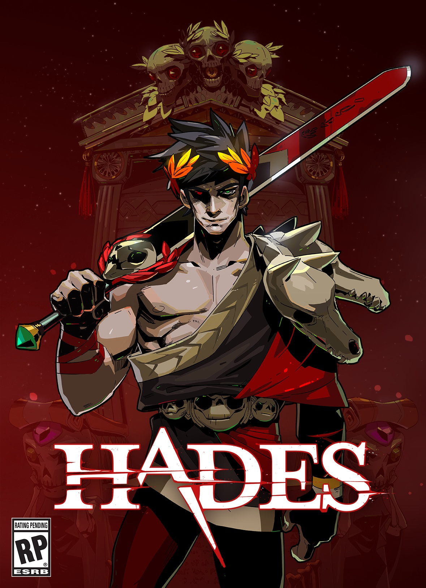

|
Hades is an action role-playing video game developed and published by Supergiant Games. The game was released in September 2020 for Windows, macOS, and Nintendo Switch, with later releases for PlayStation 4, PlayStation 5, Xbox One, and Xbox Series X/S. The game is set in the underworld of Greek mythology, where players take on the role of the god of the dead, Hades' son Zagreus, as he attempts to escape from the underworld and reach Mount Olympus. The game features a mix of hack-and-slash combat and dungeon-crawling gameplay, where players must battle their way through procedurally generated levels filled with monsters and bosses. Hades features a unique "roguelike" game design, where death is not the end of the game, but rather a means of progression. Each time the player dies, they are sent back to the start of the game, but with new abilities and upgrades to make their next attempt easier. The game also features a deep narrative with multiple storylines and characters, all of whom are fully voice-acted. Hades has received widespread critical acclaim for its fast-paced gameplay, beautiful art style, and compelling narrative. The game has been praised for its unique take on the roguelike genre, as well as its accessibility and replayability. Hades has won numerous awards, including the prestigious Game of the Year award at The Game Awards 2020. Hades is considered to be one of the best indie games of 2020, and has earned a dedicated fanbase for its engaging gameplay, unique storytelling, and high replayability. Learn More |
 |